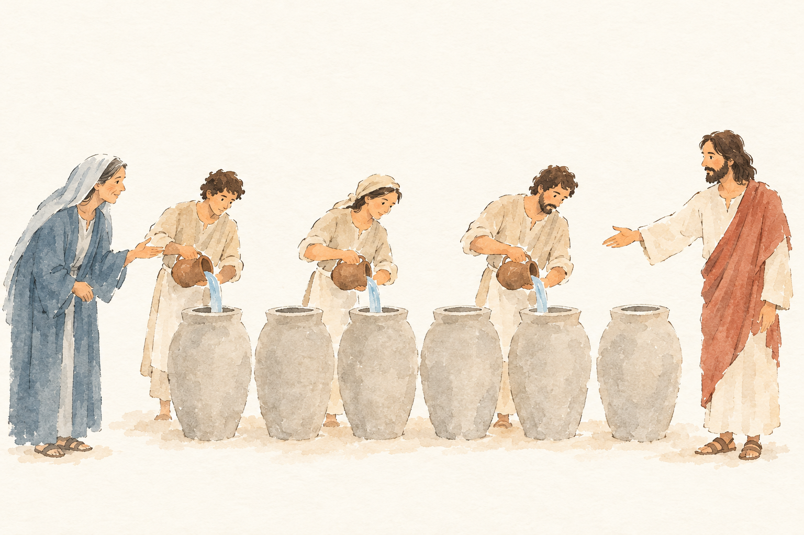
JHN-002-K2__A-aktuell__v1.png: bestanden, 4 Punkte, Kern 1 Das Schöpfen und Bringen zum Speisemeister ist nicht erkennbar.
Blind: Three people pour liquid from pitchers into large jars. A woman gestures toward them while a robed man at the right extends his hand toward the group. – Likely the wedding at Cana, at the moment the servants fill the stone jars with water before Jesus turns it into wine.
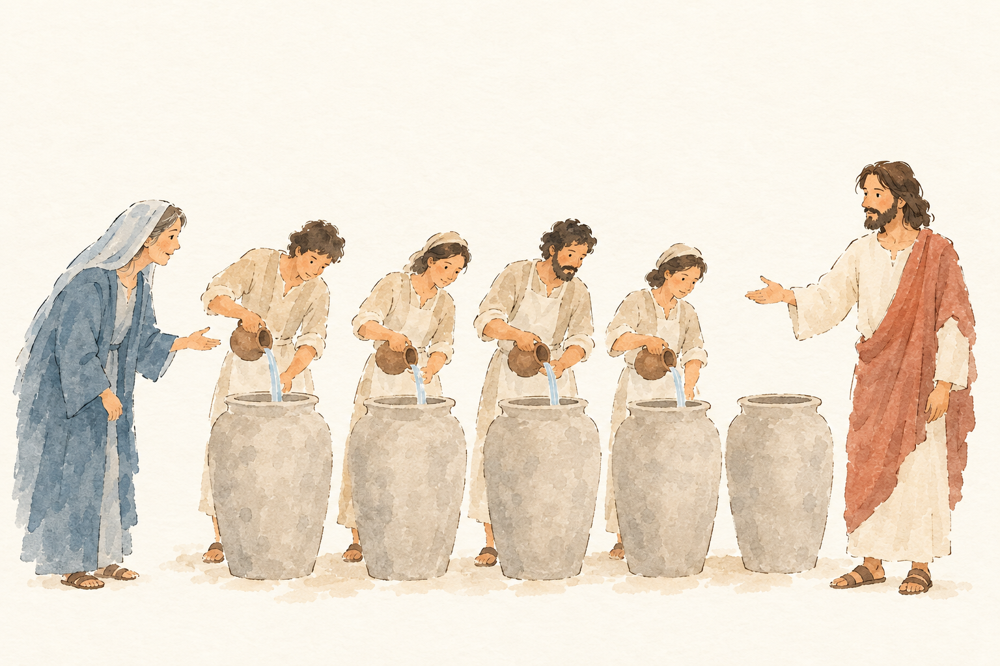
JHN-002-K2__A-aktuell__v2.png: durchgefallen, 4 Punkte, Kern 1 Das Schöpfen und Bringen zum Speisemeister fehlt; die Frau wird nicht ausdrücklich als Jesu Mutter bezeichnet.
Blind: Four people pour liquid from pitchers into large jars while a woman watches and gestures. A bearded man at the right gestures toward the group; the fifth jar has no one pouring into it. – Probably the wedding at Cana: the moment when servants fill jars with water at Jesus' instruction, before the water is turned into wine.
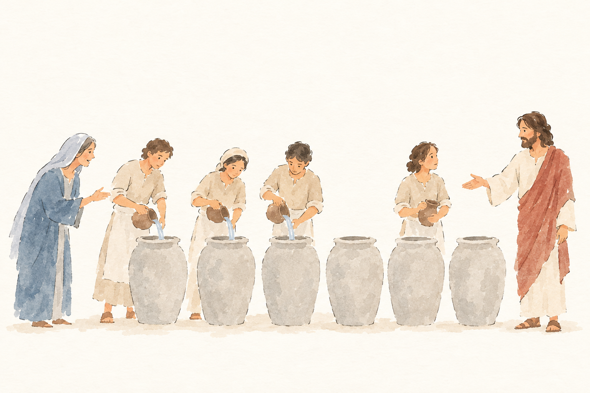
JHN-002-K2__B-schaerfer__v1.png: durchgefallen, 5 Punkte, Kern 1 Das Schöpfen und Bringen zum Speisemeister fehlt; die Frau wird nicht ausdrücklich als Jesu Mutter erkannt.
Blind: Three people pour water from pitchers into large jars while another holds a pitcher and looks toward the man on the right. The man gestures toward the group, and the woman on the left also gestures. – Likely the wedding at Cana: the moment when servants fill the six stone jars with water at Jesus' instruction, before the water becomes wine.
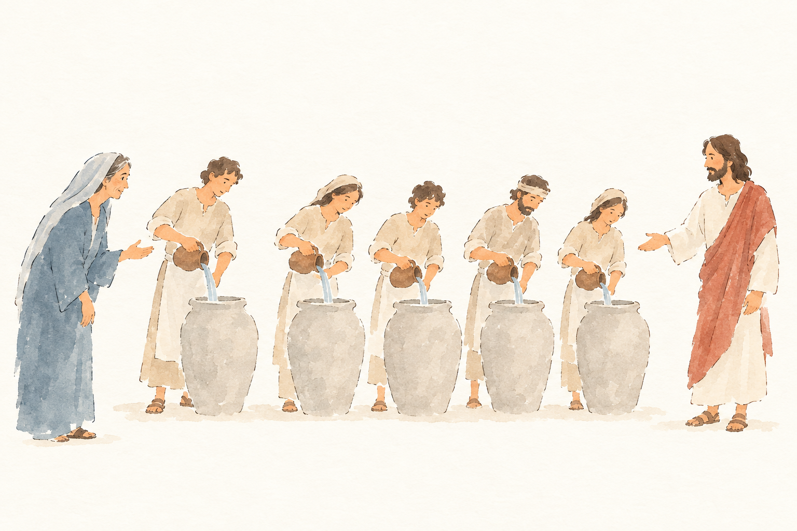
JHN-002-K2__B-schaerfer__v2.png: durchgefallen, 5 Punkte, Kern 1 Das Schöpfen und Bringen zum Speisemeister wird nicht gezeigt.
Blind: Five people pour water from pitchers into large jars. A woman gestures toward them from the left, while a bearded man gestures toward the group from the right. – This likely illustrates the wedding at Cana, at the moment servants fill jars with water before Jesus turns it into wine. The picture shows five jars, though the biblical account mentions six.
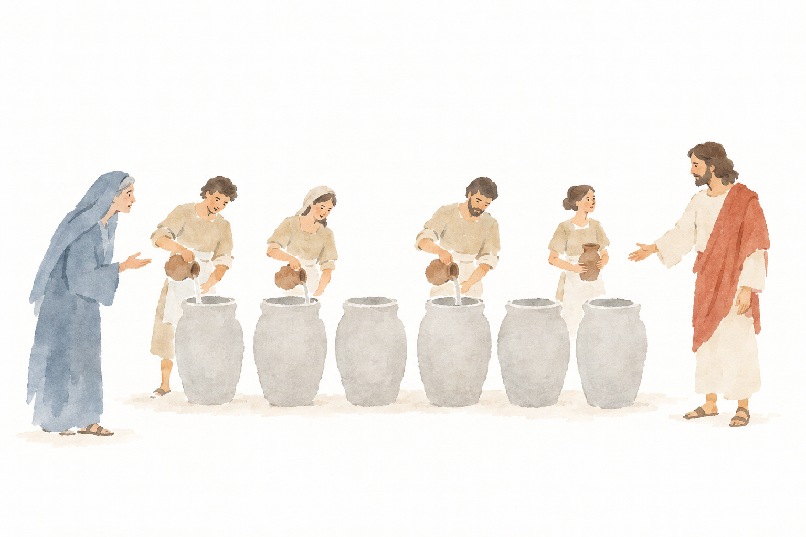
JHN-002-K2__C-ohne-vorlage__v1.png: unklar, 5 Punkte, Kern 1 Das Schöpfen und Bringen zum Speisemeister ist nicht dargestellt.
Blind: Three people pour liquid from pitchers into large jars, while a fourth holds another pitcher. A woman in blue gestures toward them, and a bearded man in white and red extends his hand toward the group. – Likely the wedding at Cana: the moment when servants fill the six stone jars with water at Jesus's instruction, before the water becomes wine.
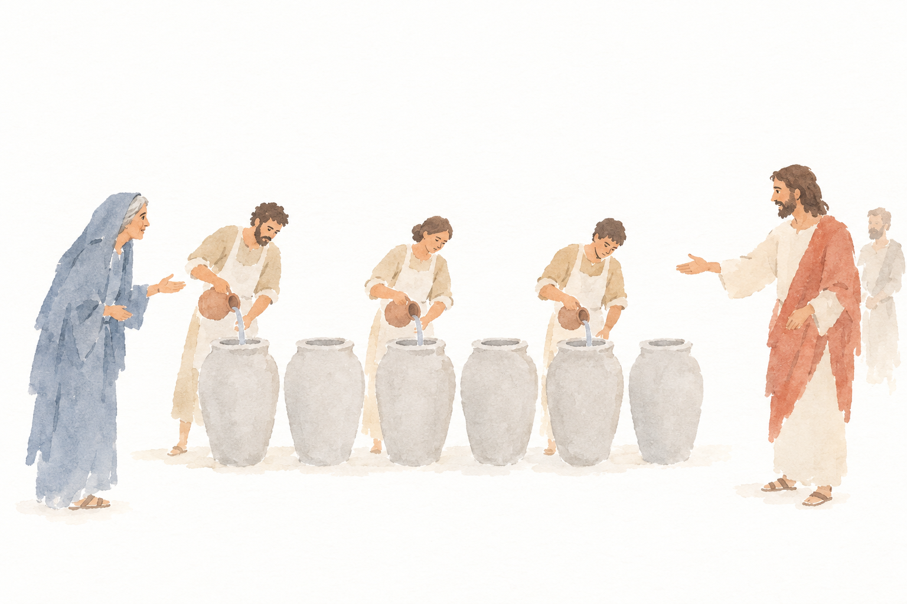
JHN-002-K2__C-ohne-vorlage__v2.png: bestanden, 5 Punkte, Kern 1 Das Schöpfen und Bringen zum Speisemeister ist nicht erkennbar; auch die Anweisungen bleiben nur angedeutet.
Blind: Three workers pour water from pitchers into large jars. A woman gestures from the left while a red-draped man extends a hand toward the scene; another man stands behind him. – Likely the wedding at Cana: the moment when servants fill the six jars with water before Jesus turns it into wine.
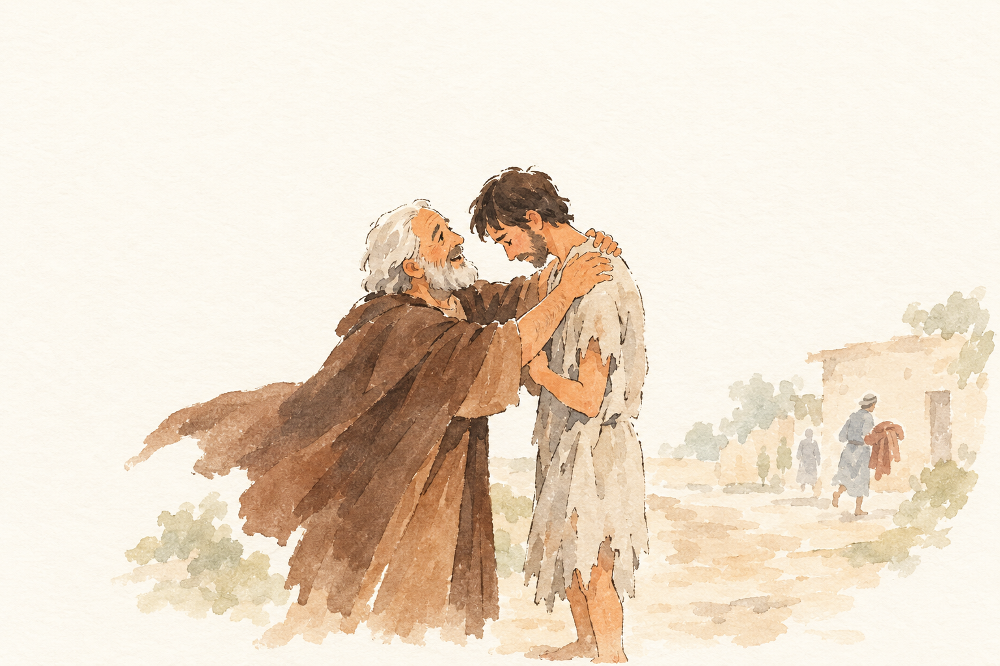
LUK-015-L2__A-aktuell__v1.png: bestanden, 4 Punkte, Kern 1 Der Kuss, das Bekenntnis des Sohnes und die Anordnung zu Gewand, Ring, Sandalen und Mastkalb sind nicht erkennbar.
Blind: An older man holds a bowed younger man by the shoulders in an affectionate greeting. In the background, one figure stands or walks along the path while another carries a bundle near the building. – Possibly the parable of the prodigal son, at the moment the father welcomes his returning son.
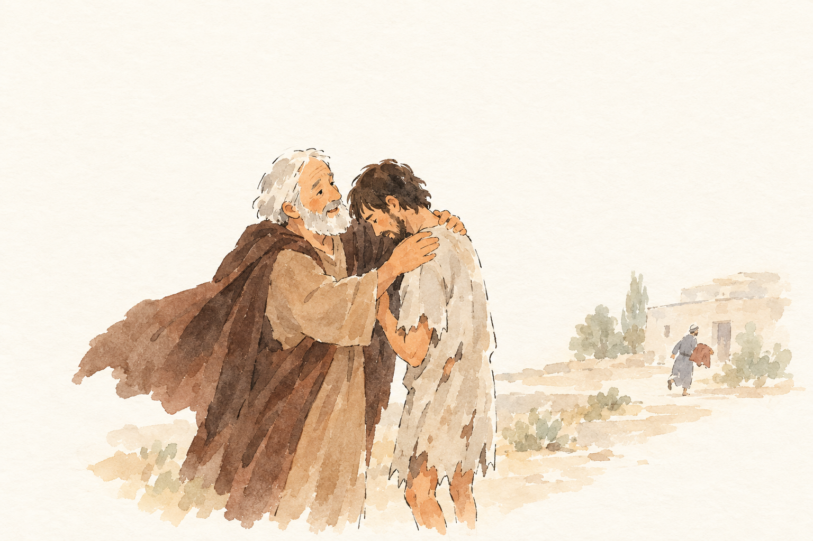
LUK-015-L2__A-aktuell__v2.png: bestanden, 4 Punkte, Kern 1 Kuss, Schuldbekenntnis und die Anordnung zu Gewand, Ring, Sandalen und Mastkalb werden nicht beschrieben.
Blind: The older man embraces the bowed younger man, holding him by the shoulders. In the background, another figure moves near a building carrying a bundle. – Likely the return of the prodigal son: the moment when his father welcomes and embraces him after his return.
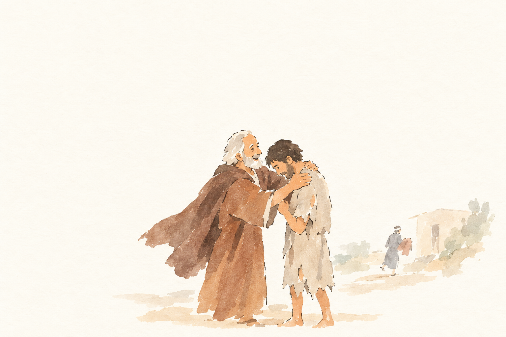
LUK-015-L2__B-schaerfer__v1.png: bestanden, 5 Punkte, Kern 1 Die Umarmung ist erkennbar, aber Kuss, Schuldbekenntnis sowie die Anordnung zu Gewand, Ring, Sandalen und Festmahl fehlen.
Blind: An older man embraces a younger man who stands with his head bowed. In the background, another figure walks toward a building carrying what looks like a bundle. – Possibly the parable of the Prodigal Son, at the moment the father welcomes his returning son.
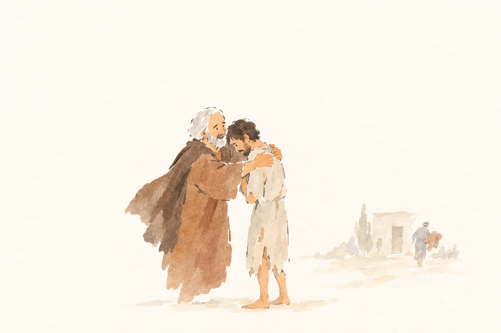
LUK-015-L2__B-schaerfer__v2.png: bestanden, 6 Punkte, Kern 2 Kuss, Schuldbekenntnis sowie Gewand, Ring, Sandalen und Festmahl werden nicht beschrieben.
Blind: An older man embraces a younger man, who bows his head against him. A distant figure walks near a building carrying what appears to be a bundle. – Likely the parable of the Prodigal Son: the moment the father welcomes and embraces his son on his return.
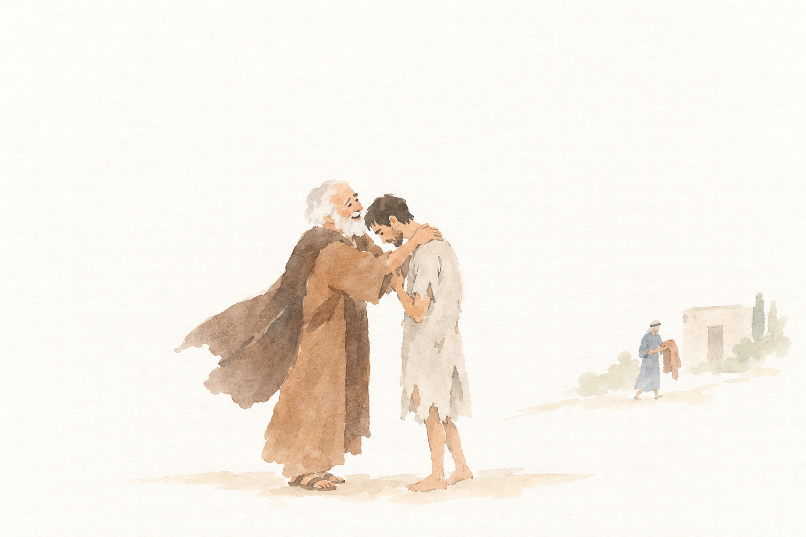
LUK-015-L2__C-ohne-vorlage__v1.png: bestanden, 5 Punkte, Kern 1 Der Kuss und das Bekenntnis des Sohnes sind nicht erkennbar; auch Ring, Sandalen und Mastkalb fehlen.
Blind: An elderly man holds a bowed younger man by the shoulders, appearing to welcome or comfort him. Farther back, another figure carries a reddish garment. – Probably the return of the prodigal son: the moment his father welcomes him home, with a figure in the background apparently bringing a robe.
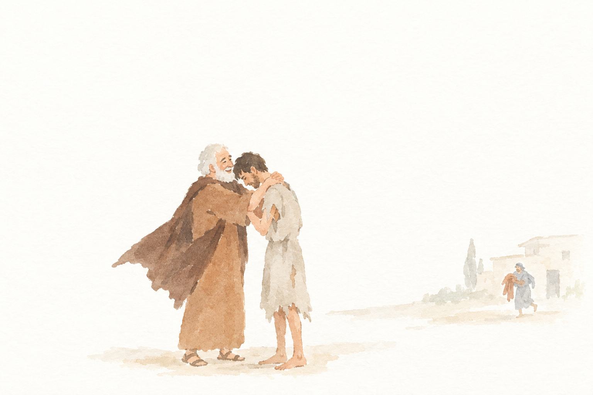
LUK-015-L2__C-ohne-vorlage__v2.png: bestanden, 6 Punkte, Kern 2 Kuss, Schuldbekenntnis, Ring, Sandalen und Festmahl sind nicht dargestellt oder nicht erkennbar.
Blind: The older man embraces the bowed younger man. In the background, another figure approaches carrying a reddish garment. – Probably the return of the prodigal son: the moment his father welcomes and embraces him, with a figure approaching with a garment.